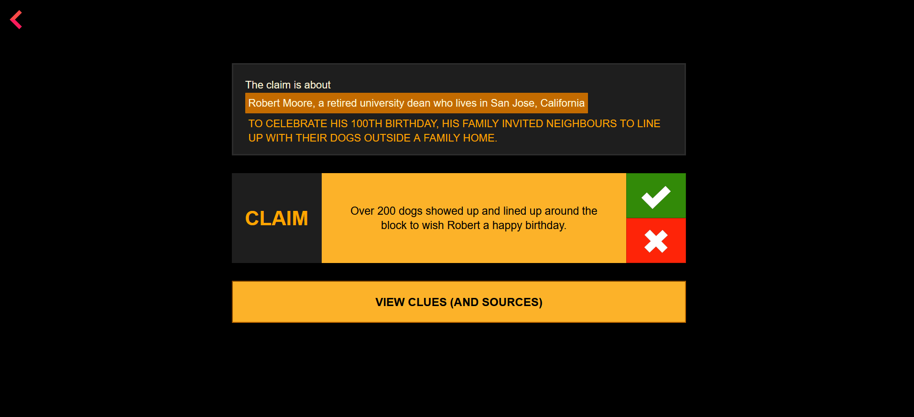

About 
About 
Who is behind TBD
Copyrights and data

A social media post’s (real one, not a parody or satire) main “fact” will be surrounded by additional information – in the post, comments, and other posts or the news/blog article.
The “additional” information’s source credibility and arguments make you believe the post (or not).
But, wait! Most of us process all that information real quick, as we have other posts to keep scrolling towards.
TBD (To Be Decided) wants you to pause, see if the supporting facts add up to the statement – which at this point, we call it a claim.
When we’re so immersed in consuming content, critical thinking often takes a back seat. You’ll be surprised how easy it is to assume X means Y!
Click here to read why and what TBD is trying to do to combat it!!
You'll see a statement (claim).
Check if the additional info (clues) add up to it and evaluate whether the claim is true or false.
Sometimes, the clues would be missing context or half-truths (just as you would find it in reality), but the claims are simple true/false.
The game aims to make you pause and think whether the clue(s) support the claim, as you have a decision to make.
TBD is mainly for the young minds — ages 11 and up.
The game does not contain violent or topical claims.
The claims and clues used have been taken from existing PolitiFact fact checks and articles.
We have tried making it simple, engaging and inclusive, for players from all backgrounds to enjoy.
Kindly write to me if you have any queries, complaints, suggestions or feedback!

Full version
TLDR
Social media runs on user engagement, and so its users tend to prioritise sharing content that engages others before thinking of verifying its accuracy. This tendency for impulsive content can lead to the spread of misinformation because people are distracted from assessing its accuracy.
The sheer abundance of information can often simplify news processing as we skim content. This diminishes our ability and the time we can spend to detect misinformation, leading to a blind trust in credible media sources.
Social media also makes us doom-scroll and is a place where we spend a lot of time reading negative news stories. Researche shows that this activity can diminish our attentiveness, and our cognitive biases make us focus more on negative information during uncertainty. This can fuel anxiety and a compulsive urge to stay informed, which can then further aggravate the spread of distressing and emotionally charged misinformation.
When social media users don’t critically think about what they consume because they’re deeply immersed in the content, it can lead to low efficiency and high errors. There are many media literacy initiatives that pass on the responsibility of not taking in misleading content to individuals. This raises questions about the role of media and journalists, as the rise of “non-professional” journalism on social media is observed to complicate things further when fake news can be seen as “profitable”. While media organisations and platforms must play a proactive role in ensuring content accuracy and integrity, promoting critical thinking and information verification can help mitigate misinformation, on the other hand.
Factitious saw a short-lived success, thanks to the US schools' engagement and their interest in integrating it into classroom learning. One of its co-creators Robert Hone, shares his takeaways: “From my limited experience observing students using the Factitious news game as part of media literacy courses (which occurred in 2019, before ChatGPT was released), I’ve noticed several useful tactics: Games that challenge players to correctly identify false and true online stories can help introduce the concept of media literacy in a fun and surprising way. When organising students into groups of competing teams, they debate within their teams as to the veracity of articles, thereby vocalising their thought processes, which aids learning.”
Fakey focuses on identifying trustworthy sources, emphasising how it is important to evaluate players' ability to distinguish between true and false information using source identification. The News Literacy Project's (NLP) Senior Director of Media Relations, Christina Veiga, emphasised the importance of media literacy programmes for educating students and educators and good practices for the same. Their game, Informable targets general audiences and students. The Bad News game shows us how easy it is to become a "fake newsmonger".
Taking into account these insights, as a part of my master's dissertation, I have prototyped a media literacy game with an emphasis on critical thinking for students.
TBD, or "To Be Decided," is a media literacy gamification initiative designed to work on the critical thinking aspect of media literacy, especially among the younger generation, addressing issues of misinformation and impulsive content sharing. It is an effort to reshape the way we consume and evaluate information.
It encourages critical thinking about the current events we read about and how truthful they seem. TBD's primary motivation is to bring media literacy gamification into education, particularly in schools.
As the game’s idea and goals became clear, I required a database of claims and related data. The game involves players looking at supporting information about the claim and deciding whether they validate/invalidate the claim. I had reviewed the few existing fact-checking APIs earlier and noted their shortcomings – they don’t show related misleading and correct links, they don’t have a list of what is true and what is false about a claim, and they don't provide context for the claim. I looked at the True, Good enough to be true and False fact-checks from PolitiFact, taking note of what each claim said, who it was about, its context, the claim’s story and giveaways. After that, I reviewed the clues and information about the claim, sorted them into clues and responses, wherever applicable. When I couldn’t find the responses’ content in the article, I created them based on guides and theories of fact checking from News Literacy Project, Poynter IFCN, etc. I have used only PolitiFact fact-checked claims in this game for its resourceful articles, maintain consistency, and keep it simple for now. Data curation was the game's foundation after the principles and context were established because it provided the framework and character that a prototype was built on.
Referring back to the project’s review’s observations about people constantly switching their attention and the nature of social media consumption, I designed this game – both design interface and concept flow – based on my understanding that people, especially younger ones, consume a lot of social media content in short bursts rather than a consistent and continuous narrative.
I tried to keep the game simple and straight-forward with a concise and engaging (not cluttered) interface design. I wanted to follow the simplicity of the game’s goal and objectives, and communicate it directly with a simple tone. This helped me prioritise the game’s core objectives, focusing on its usability and functionality, rather than worrying about complex mechanics and flows. It was time efficient too. To visualise the game's flows and content, I created a single-page paper prototype. This made experimentation, iteration, and improvement easier and faster. I then tried this out as a simple HTML-CSS-JS app prototype that pulls data from a JSON file curated from the selected fact checks.
The player will first see who the claim is about and the context in which it is set as the claim loads. The claim will be displayed along with a prompt to view clues and sources – how can one decide the claim’s truthfulness without looking at related information? It’s the player’s choice whether they want to investigate any given clues’ (related information) sources if they have hyperlinks, and whether to view more clues. The app will track how many clues they’ve viewed and choose a response based on whether they find a particular claim truthful or not. When they decide and click on the true or false buttons, the game will show a creator-generated response along with the source of the fact check. TBD will also let players know where they possibly could have made a misjudgement based on half-fact clues or irrelevant clues. Even if they get the verdict right after viewing an incomplete clue, the game will prompt an appropriate educational response.
Considering each piece of information would be no longer than 2 lines or sentences – made that way to retain the player’s attention, deciding whether a claim is true or false wouldn’t take more than a few seconds of viewing the clues – unless the class is having a discussion about it. For this reason, I have not decided whether to track the time taken to evaluate each clue as a backend research record or as an on-screen limit.
I hope to test this out if and when the intended audience plays the game and discusses whether they had a smooth interaction with it and whether it was too easy. By simplicity, I mean simple rules and game mechanics, not easily discernible content.
The first obstacle I faced was a lack or limited availability of reliable, up-to-date fact-check APIs to use for the game. For this scope of the project, I created my dataset using the published fact-checks. Next was finding research or survey data on media literacy trends, the specific needs of the target audience, and, mainly, how to interpret these numbers. This is a challenge I haven’t dealt with while prototyping the game or writing the article, as it was hard to get an expert view or try to make sense of it in a way that matters. Defining who would play this game and how to reach them was something I had to do before I could get into data collection and creative design. During the course of data collection, I had to understand who is responsible for teaching and promoting media literacy in different settings and tailoring the game accordingly. It was important to answer the question of why anyone would want to play it to make sure the game had enough motivation and engagement.